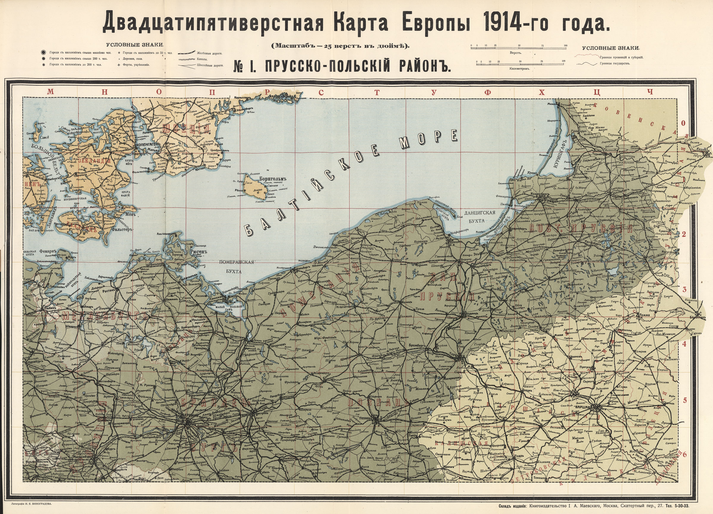
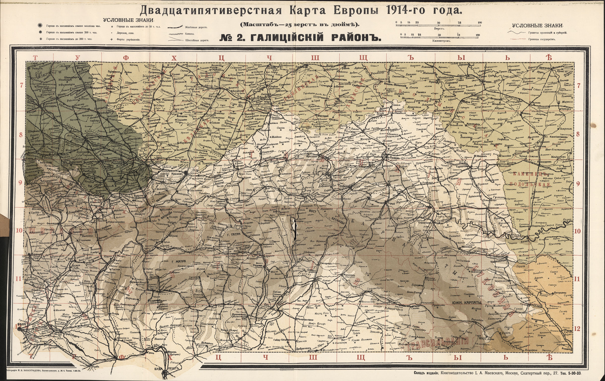
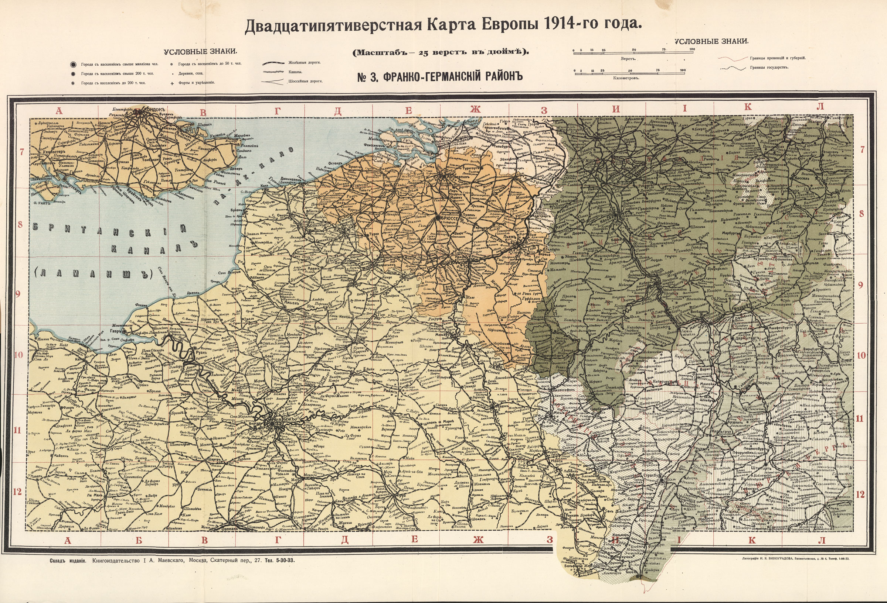
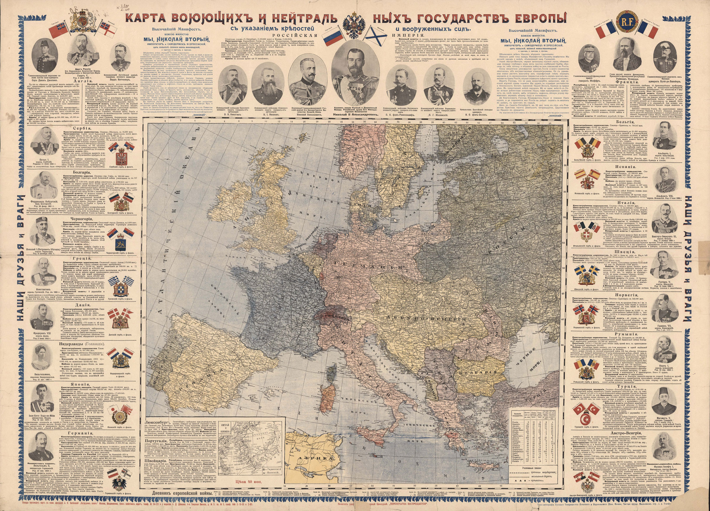
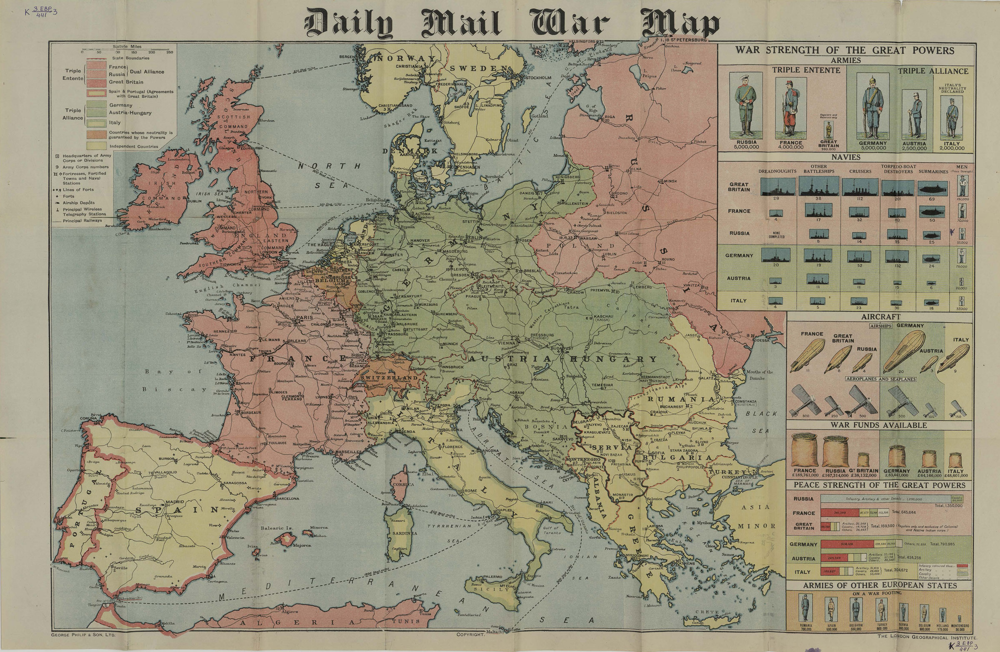
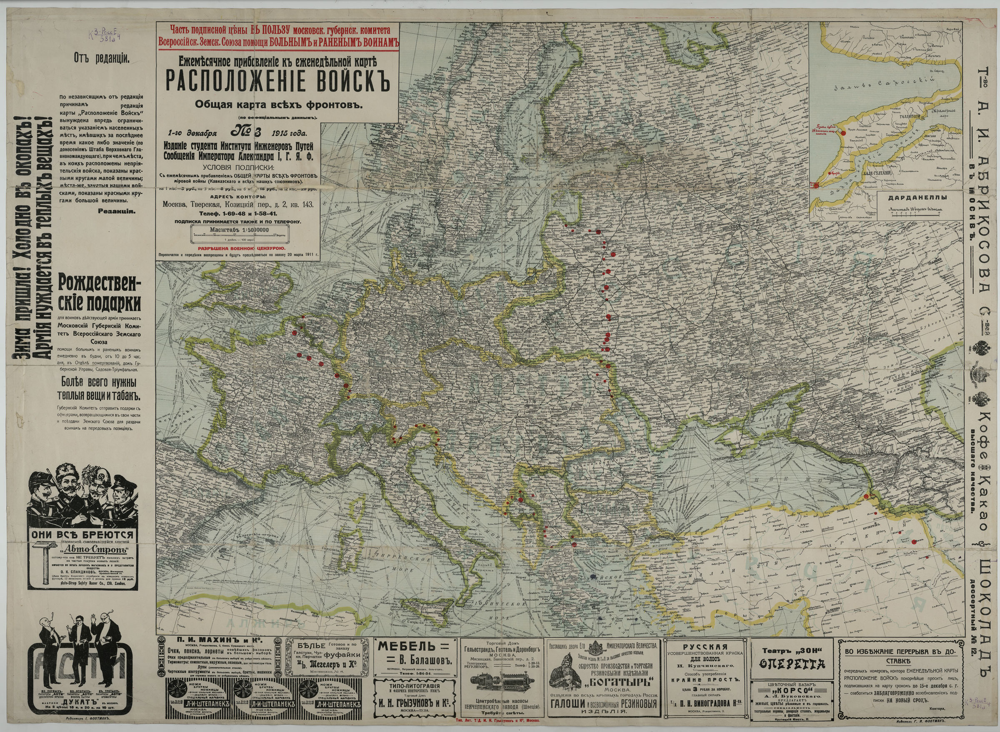
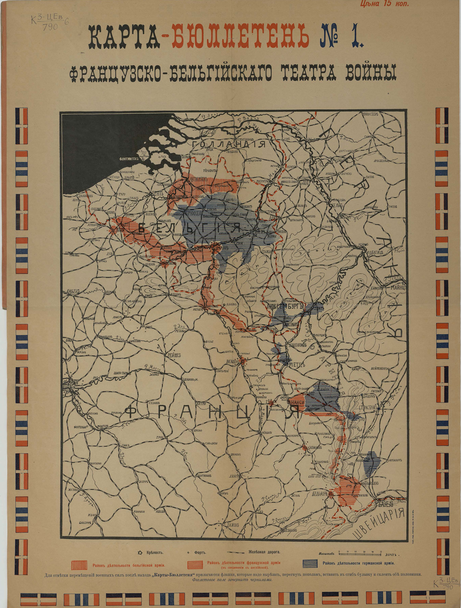
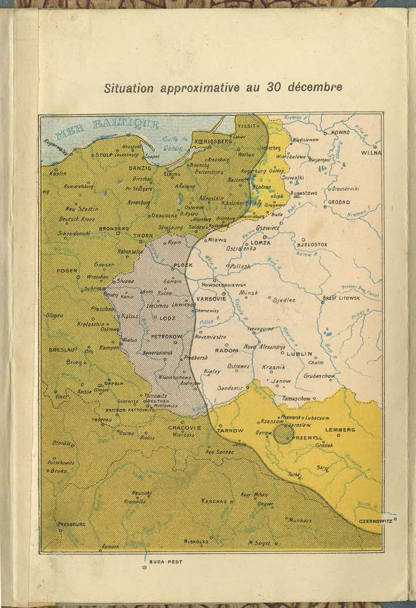
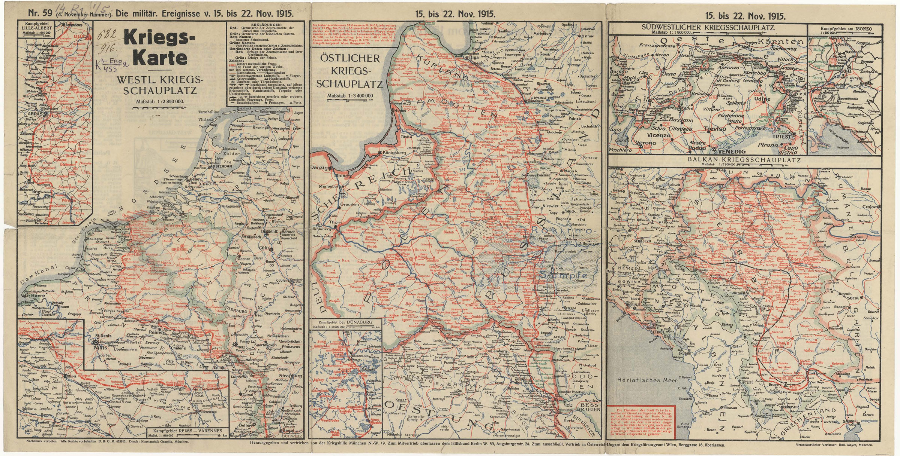

Прусско-Польский район
Карта посвящена наиболее сложному и опасному участку Восточного
фронта, где развернулись кровопролитные битвы русских войск против
германской армии, такие как Гумбинен-Гольдапское сражение и другие.

Галицийский район
В этом районе был проведен ряд выдающихся операций русской армии,
среди которых Галицийская битва и Брусиловский прорыв.

Франко-Германский район
Франко-Германский район Именно на этом участке Западного фронта
происходили основные события, начиная с прорыва немецких войск через
Бельгию к французской границе. Именно здесь развернулись все крупные
сражения французско-немецкого фронта, такие как битва на Марне, битва
при Ипре, где немецкие войска впервые применили отравляющие газы,
Верденское сражение – одна из самых кровопролитных операций Первой
мировой.

Карта воюющих и нейтральных государств Европы: С указанием крепостей и вооруженных сил.
Карта интересна тем, что представляет не только театр военных действий
в Европе, но и статистические сведения о государствах-участниках.
Кроме статистических сведений добавлены комментарии о вступлении в
войну государств-участников, а также отношение к войне нейтральных
стран. Помещены портреты глав государств и главнокомандующих армиями и
флотами, среди которых Президент Французской республики Раймонд
Пуанкаре (1860–1931), император Германии Вильгельм II (1859–1941),
командующий французской армией генерал Жозеф Жоффр (1852–1931),
британский адмирал Джон Джелико (1859–1935) и другие.

Daily Mail War map.
Карта Европейского театра военных действий в Европе в Первую мировую
войну. Показан район, где развернулись военные действия, приведены
сравнительные диаграммы количества различных типов вооружений, живой
силы и военных запасов противоборствующих сторон. Отмечены важнейшие
радиостанции и главные железные дороги, отдельные крепости и
укрепленные линии фортов, такие как Верденский укрепленный район.

Расположение войск австро-германцев на Русском фронте (по официальным данным): Еженедельная карта.
На представленных картах нанесена линия фронта в период с 11 сентября
до 27 ноября 1915 г. Причем с №12, вышедшего 21 ноября 1915 г., вместо
сплошной линии фронта указываются лишь отдельные населенные пункты,
«имевшие за последнее время какое- либо значение (по донесениям Штаба
Верховного главнокомандующего)». На полях карт – многочисленные
рекламные объявления и призывы жертвовать на нужды фронта. На карты
была открыта подписка, 10% от которой шло в пользу московского
губернского комитета Всероссийского земского союза помощи больным и
раненым воинам.

Карта-бюллетень №1 [18 августа 1914 г.] французско-бельгийского театра войны: С указанием путей сообщения, укрепленных пунктов и района действия армий воюющих держав.
По таким картам-бюллетеням можно было не только следить за изменением
обстановки на фронтах, но и отмечать эти изменения флажками. Заготовки
флажков для каждого воюющего государства печатались по рамке карт.

Le front: Atlas dépliant de 32 cartes. Front occidental: les fronts successifs du 10 août au 31 décembre, en seize cartes. Front oriental: les fronts successifs du 10 août au 30 décembre, en seize cartes.
Атлас, состоящий из 32 карт, показывает изменения положения Западного
и Восточного фронтов через неравные промежутки времени в период с
начала войны до конца 1914 года. На картах показан наиболее
драматичный период начала Первой мировой войны. Оккупация Бельгии,
проигранное французами приграничное сражение, «Чудо на Марне» и «Бег к
морю», первые сражения русской армии – все это нашло свое отражение на
страницах атласа.

[Die wochentlichen Kriegsschauplatzkarten]: Die militärischen Ereignisse (v. 15 Nov. 1915 bis 30 April 1917).
Набор подробных карт, представляющих еженедельный обзор военных
действий на фронтах Первой мировой войны. На картах отмечались линии
фронтов, объекты атак дирижаблей, места дислокаций военных кораблей,
отдельные форты, а также захваченные или уничтоженные корабли,
гражданские суда и подводные лодки. На дополнительных картах более
крупного масштаба изображались районы важных сражений. На обороте
каждого листа помещены обширные комментарии к событиям представленного
на карте хронологического периода. Иногда на обороте листа помещались
карты наиболее важных боев, не попавшие на лицевую сторону. Издание
выходило в течение всей войны в Мюнхене в разной комплектации. Данный
набор карт охватывает период с 15 ноября 1915 г. до 30 апреля 1917 г.
